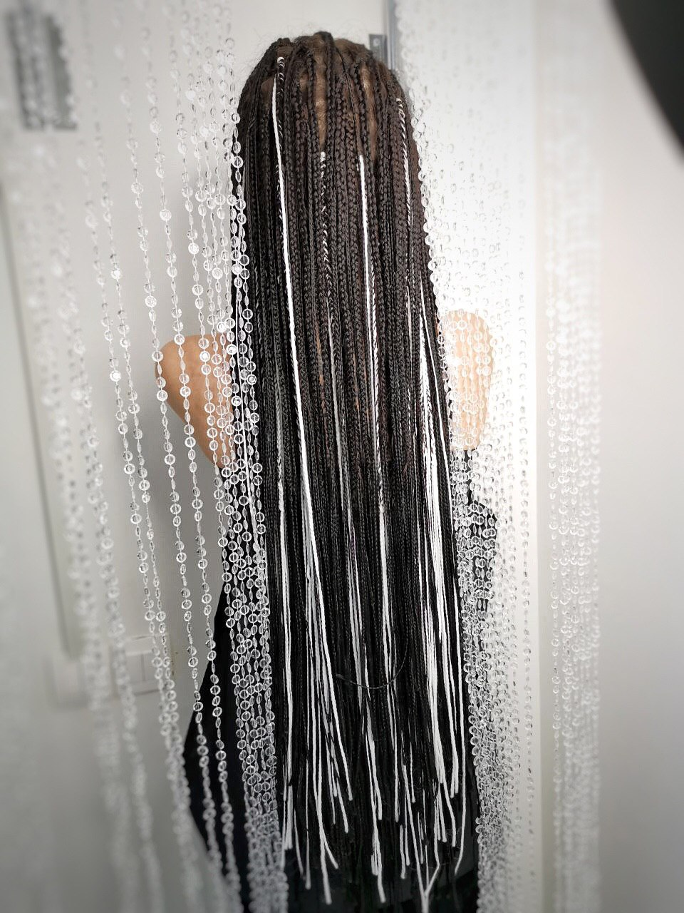

Телефон:
Любительницы экстравагантных, нестандартных экспериментов над своими волосами все чаще пробуют африканские косички, которые иначе называют зизи. Такие косички очень удобны, просты в уходе, они не требуют использование фена, плоек, утюжков и других многочисленных средств для укладки волос. Обладательницей такой причёски может стать любая девушка в независимости от длины или цвета волос. Палитра зизи очень разнообразна и позволяет выбрать много вариантов для создания индивидуального образа! Процесс плетение занимает 3,5 - 6 часов в зависимости от длины и густоты волос.
У нас в студии можно выполнить любое плетение. Также вы можете побаловать необычным плетением своих деток. Опытный мастер поможет вам в этом вопросе.
Инстаграм: @black_flamingo.brest

ИП: 291593305
Брест, Комсомольская 52/3: